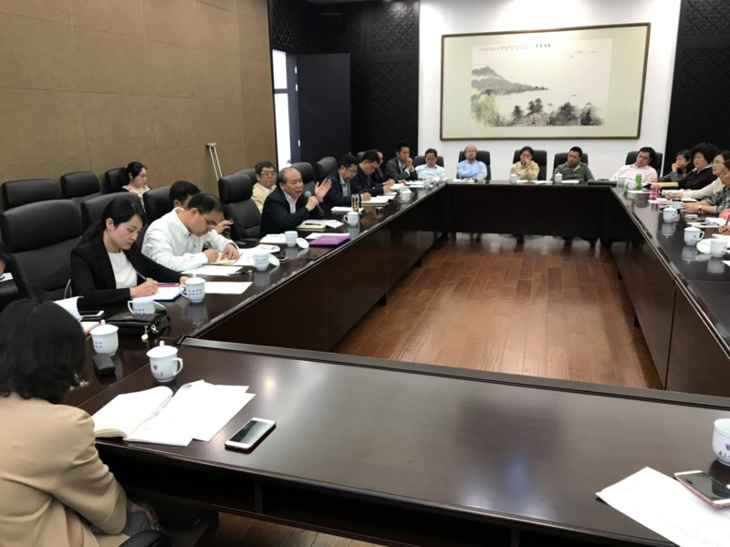
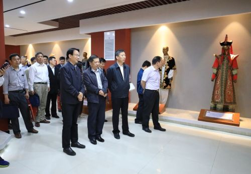
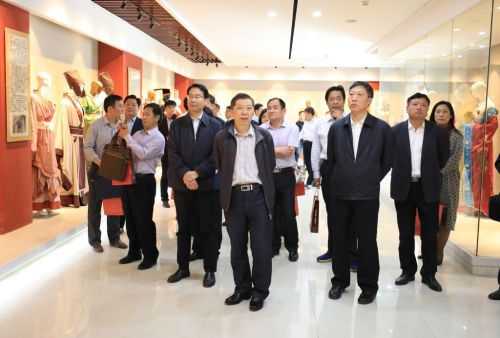
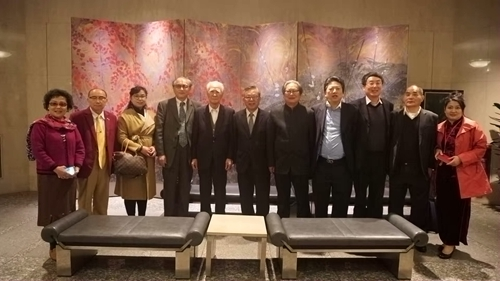

山东服装职业学院
shan dong fu zhuang zhi ye xue yuan
- 保障服务
- 基建后勤
- 安全保卫
- 财务工作
综合管理
党委办公室(院长办公室)简介山东服装职业学院办公室是党委办公室、院长办公室合署办公的综合、协调、服务部门。根据泰编办《关。自建校以来，办公室紧紧围绕学院的中心工作，牢固树立科学发展观，创新工作机制，强化管理职能，服务学院建设发展，积极探索新时育系统办公室工作先进个人”、“优秀教育工作者”、“优秀党务工作者”、“优秀共产党员”、“信访稳定工作先进个人”等称号。 |
 |
教师管理办法山东服装职业学院办公室是党委办公室、院长办公室合署办公的综合、协调、服务部门。根据泰编办《关于山东服装职业学院内部机构调整及科级机构设置的批复》设有秘书科、行政科、档案科等科室，后增设机关服务中心。自建校以来，办公室紧紧围绕学院的中心工作，牢固树立科学发展观，创新工作机制，强化管理职能，服务学院建设发展，积极探索新时 |
 |
教师申诉办法山东服装职业学院办公室是党委办公室、院长办公室合署办公的综合、协调、服务部门。根据泰编办《关于山东服装职业学院内部机构调整及科级机构设置的批复》设有秘书科、行政科、档案科等科室，后增设机关服务中心。自建校以来，办公室紧紧围绕学院的中心工作，单位”；多人被上级主管部门和学院评为 “山东省教育系统办公室工作先进个人”、“优秀教育工作者”、“优秀党务工作者”、“优秀共产党员”、“信访稳定工作先进个人”等称号。 |
 |
学生管理规定山东服装职业学院办公室是党委办公室、院长办公室合署办公的综合、协调、服务部门。办公室工作的有效途径和方法，较好地发挥了参谋助手和综合协调作用，为学院的建设发展做出进单位”；多人被上级主管部门和学院评为 “山东省教育系统办公室工作先进个人”、“优秀教育工作者”、“优秀党务工作者”、“优秀共产党员”、“信访稳定工作先进个人”等称号。 |
 |